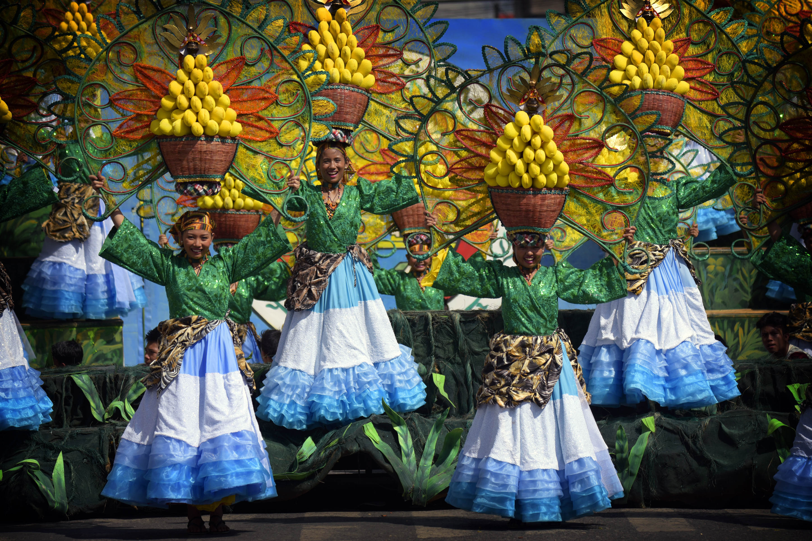
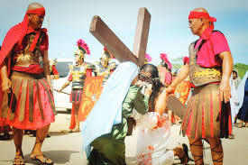
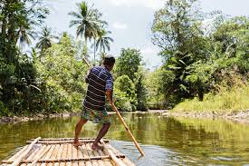
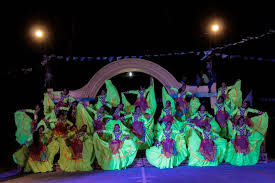
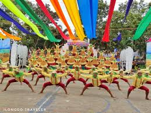
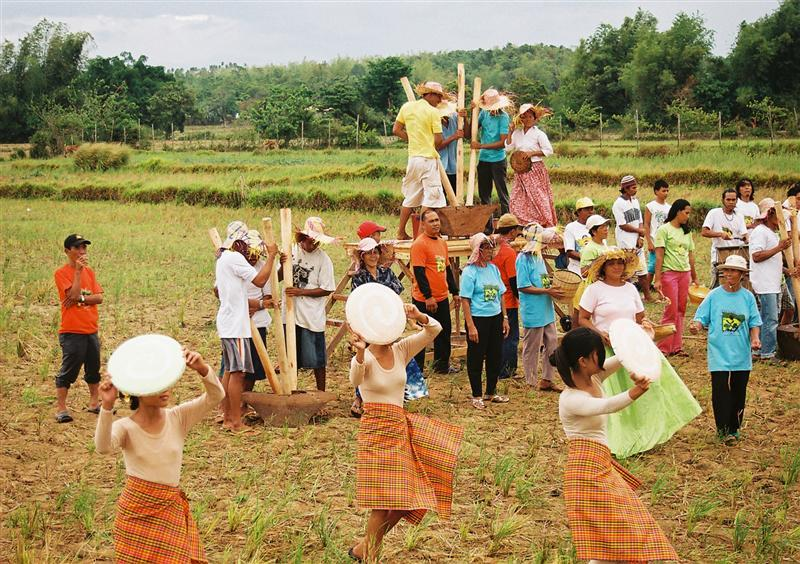

Festivals of Guimaras
Experience the vibrant spirit and rich traditions of the Ilonggos.
Cultural Festivals
Guimaras celebrates life through vibrant fiestas, sacred reenactments, and community festivals rooted in faith and harvest.






Culture & Traditions
Bayanihan Spirit
The spirit of community cooperation — "bayanihan" — is alive in Guimaras. Neighbors help each other in farming, fishing, and during celebrations. It is the foundation of the Ilonggo way of life.
Deep Religious Faith
Religion plays a central role in everyday life. Regular participation in church activities, fiestas, and the annual Pagtaltal reenactment reflects the strong Catholic faith of the Guimarasnon people.
Mango Farming Culture
Mango farming is not just an industry — it is a way of life and a source of identity. Families have farmed mangoes for generations, and the harvest season is a time of celebration and pride.
Fishing Traditions
Coastal communities rely on fishing traditions passed down from generation to generation. Traditional methods, communal boat launches, and respect for the sea define the coastal culture of Guimaras.